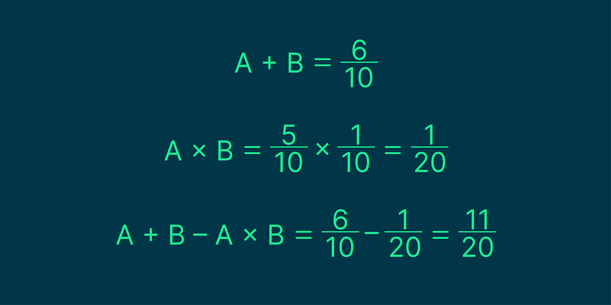
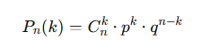
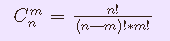
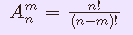
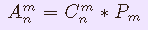

Событие — это всё, что может произойти, когда мы совершаем какое-то действие. Например, если мы бросаем монетку, то событие — это выпадение орла или решки. Чтобы обозначать события, используют заглавные буквы латинского алфавита. Например, для орла можем выбрать букву A, а для решки — B.
Основные виды классификации событий:
Достоверные — те, которые точно произойдут. Если бросить стакан на пол, то с вероятностью 100% он полетит вниз.
Невозможные — те, которые никогда не произойдут. Если бросить тот же стакан на пол, то он никогда не полетит вверх
Случайные — те, которые могут произойти, а могут и не произойти. Например, если мы бросаем игральный кубик, то не можем с уверенностью сказать, что выпадет число 2.
Несовместимые — те, которые исключают друг-друга. Например, при подбрасывании монетки может выпасть либо орёл, либо решка — оба одновременно они выпасть не могут.
Вероятность — это число, которое обозначает шанс возникновения события.
Если вероятность равна 0, то событие никогда не произойдёт, а если 1 — точно произойдёт. Всё, что посередине, — это случайные события.
Самый простой способ вычислить вероятность — поделить число благоприятных событий на общее число возможных событий. Например, если всего в колоде 36 карт, а мы хотим достать короля пик, то вероятность этого события равна 1/36, или 0,03. Если бы нас устроил любой из королей, то вероятность была бы равна 4/36 — то есть 0,1.
Вероятность может быть условной — или зависеть от другого события. Например, если мы хотим вытащить любой туз из колоды карт, шанс равен 4/36. Но если до этого кто-то уже вытащил одного туза, то вероятность будет равна 3/35. Это потому, что в колоде стало на одну карту меньше и количество благоприятных событий тоже уменьшилось.
Когда мы считаем вероятности, нас может устраивать более чем один результат событий. Или другая ситуация — нам может быть важно, чтобы два события выполнялись вместе. В таких случаях на помощь приходит алгебра событий.
Сумма двух событий A + B — это сложное событие, которое произойдёт, если случится или событие A, или событие B, или оба одновременно.
Допустим, мы хотим вычислить вероятность выпадения на кубике стороны с числами 2 или 4. Обозначим событие «выпадение стороны 2» как A, а событие «выпадение стороны 4» как B. Так как у кубика всего шесть граней, вероятность выпадения каждой из этих сторон равна 1/6.
А так как нас интересует либо событие A, либо событие B, мы ищем сумму этих событий — A + B. Вычисляем соответствующие вероятности:
Получается, что шанс выпадения стороны 2 или 4 при броске кубика равен 2 к 6, или 1 к 3, или 33%.
Правило сложения можно применять не только к двум событиям, но и к любому их количеству. Например, событие A + B + C + D произойдёт, если случится хотя бы одно из событий A, B, C, D или одна из их комбинаций, такая как A и C или A, C и D.
Произведение событий A и B — это событие A × B, которое произойдёт, если случится и событие A, и событие B.
Допустим, мы бросаем монетку два раза и хотим понять, каков шанс, что оба раза выпадет решка. Напомним, что вероятность выпадения решки — 1/2.
Обозначаем события: A — решка выпадает первый раз, B — решка выпадает второй раз. Считаем вероятности:
Получаем, что шанс выпадения решки два раза подряд — 25%.
Как в случае с суммой, произведение событий можно считать для любого количества разных событий. Давайте продолжим пример с монеткой — теперь мы хотим, чтобы она выпала четыре раза подряд.
Добавляем два новых обозначения: C — решка выпадает третий раз, D — решка выпадает четвёртый раз. Вероятности всё те же, считаем их произведение:
Ответ — шанс выпадения решки четыре раза подряд равен 1 к 16, или 6,25%.
Формула: P (A + B) = P (A) + P (B) — P (A ⋅ B)
Примером такого сложения может быть выбор случайных чисел. Допустим, у нас есть набор чисел от 1 до 10 и мы хотим найти вероятность того, что выбранное число будет или нечётным, или делиться на 7 без остатка.
Событие A — число нечётное. Вероятность выбрать именно его — 5/10.
Событие B — число делится на 7 без остатка. Вероятность — 1/10.
Так как число 7 удовлетворяет обоим условиям, мы имеем дело с совместимыми событиями — то есть они могут происходить одновременно. Подключаем формулу: сначала находим сумму вероятностей, а потом вычитаем из неё вероятность пересечения.
Граф — это математическая структура, которая используется для моделирования связей между различными объектами. Граф состоит из вершин и рёбер, которые их соединяют.
Проще всего понять природу графов на примере. Представьте, что у нас есть три города с незамысловатыми названиями A, B, C, которые соединены дорогами AB, AC и BC. На рисунке это можно изобразить так:

Граф состоит из следующих элементов:
Вершины. Ключевые точки или объекты в графе. Это могут быть, например, города на карте, веб-страницы в интернете или отделы в компании.
Рёбра. Линии, которые соединяют вершины. Например, дорога между двумя городами, гиперссылка между веб-страницами или взаимодействие между отделами в компании.
В графах рёбра и вершины могут иметь разные виды связей друг с другом. Это позволяет строить гибкие связи между объектами и отражать больше полезной информации на рисунке.
Ребро, соединяющее одну вершину с другой, называется инцидентным этим вершинам. Например, ребро AB соединяет вершины A и B. Оно будет инцидентно как вершине A, так и вершине B. Отношение инцидентности существует только между вершиной и ребром, два ребра или две вершины не могут быть инцидентными.
Рёбра могут быть направленными и ненаправленными. Если вершины A и B соединяет ребро и из A можно попасть в B и обратно, то ребро будет ненаправленным. Например, дорога, соединяющая города A и B, по которой можно попасть как из A и B, так и из B в A, — это ненаправленное ребро между вершинами графа A и B.
Если же из A можно попасть в B, но из B в A нельзя, то ребро будет направленным из A в B. Ненаправленные рёбра могут показывать не только дороги между городами, но и подписки в социальных сетях. Например, если пользователь подписался на друга, но тот не ответил взаимностью, то такую связь называют ненаправленной.
Если все рёбра в графе имеют направление, такой граф называется направленным (или ориентированным), если все рёбра без направления, то граф называется ненаправленным (неориентированным), и, наконец, если в графе некоторые рёбра направленные, а некоторые нет, граф именуется смешанным.
Петля (или цикл) — особый вид ребра, которое начинается и заканчивается в одной и той же вершине. В социальной сети петля может означать, например, что человек отправил сообщение сам себе. Если в графе нет ни одной петли (цикла), такой граф называется ациклическим.

В теории графов путь, цепь и цикл — способы перемещения от одной вершины к другой. Эти понятия помогают решать задачи, которые возникают при поиске оптимальных маршрутов или при моделировании сложных систем связей.
Разновидности маршрутов в графах:
Путь — конечная или бесконечная последовательность вершин и рёбер, в которой конец одного ребра является началом следующего.
Цепь — это последовательность рёбер, в которой каждое ребро связано со следующим с помощью общей вершины. В цепи могут повторяться вершины, но не рёбра.
Цикл — особый случай пути, который начинается и заканчивается в одной и той же вершине. При этом все рёбра и вершины (кроме начальной и конечной) уникальны. Важное условие цикла: вы не должны проходить по одному и тому же ребру дважды.
Ориентированный. Граф, в котором каждое ребро указывает своё направление с помощью стрелок, по которым можно передвигаться. Например, когда есть путь A → B → C, но нет обратных рёбер; вернуться из C в A нельзя.
Неориентированный. Граф, в котором рёбра не указывают направление. Это значит, что из любой вершины можно попасть в любую точку графа.
Смешанный. Граф, который содержит как ориентированные, так и неориентированные рёбра.
Граф с петлями. Рёбра графа, которые начинаются и заканчиваются в одной и той же вершине, называются петлями. Например, если мы строим схему связей в социальной сети, то с помощью петли можно показать, что пользователь ставит лайки своим же публикациям.
Мультиграф. Если между двумя графами существует несколько рёбер, то такой граф будет называться мультиграфом. Такие графы часто используются в схемах транспортных систем, когда между городами есть несколько разных маршрутов (железная дорога, автомобильная дорога и авиарейсы).
Связный граф — граф, в котором существует путь между любой парой вершин. Из каждой вершины по рёбрам можно добраться до любой другой вершины. В связном графе нет изолированных вершин или групп, которые не связаны с остальными частями графа.
Существует особый вид графов, в которых нет замкнутых областей, но между каждой парой вершин проложен путь. Такие графы называются деревьями и широко используются в алгоритмах поиска и сортировки данных.
Основные свойства деревьев:Между любыми двумя вершинами существует связь.
Между любыми двумя вершинами есть единственный путь. Это означает, что не может быть двух разных путей, соединяющих одну и ту же пару вершин.
В дереве с n вершин ровно n − 1 рёбер. Это фундаментальное свойство деревьев.
Среднее арифметическое (среднее значение) ряда чисел – это число, равное отношению суммы этих чисел к их количеству.
Размах ряда чисел – это разность между наибольшим и наименьшим из чисел в ряде.
Мода ряда чисел – это наиболее часто встречающееся число ряда.
Медиана ряда чисел – серединное значение упорядоченного ряда чисел.
Если ряд состоит из чётного количества чисел,то нужно найти среднее арифметическое двух чисел,находящихся посередине ряда
Дисперсия — это мера разброса данных относительно среднего значения. Чем больше дисперсия, тем более разбросаны данные. Дисперсию можно рассчитать для любых данных, которые представляют собой значения, полученные в результате эксперимента или наблюдений
Формула:D = (1/n) * ∑ (x - μ)^2
где D - средняя дисперсия,
n - количество значений в выборке,
x - значение каждого элемента выборки,
μ - среднее значение выборки.
Схема (формула) Бернулли – это специальная формула для вычисления вероятности того, что в серии из nnn одинаковых и независимых испытаний произойдет ровно k успехов.
Пусть вероятность успеха в одном испытании равна p, а неуспеха – q=1−p. Тогда вероятность того, что в n испытаниях ровно k раз произойдет успех, равна
Условия применения схемы Бернулли:
1.Испытания независимы.
2.Вероятность успеха постоянна в каждом испытании.
3.Каждый эксперимент имеет только два исхода.
Комбинаторика — раздел математики, изучающий сочетания, перемещения, перестановки элементов, цифр, переменных, данных и т.д.
Факториал числа — это произведение натуральных чисел от 1 до а.
Факториал обозначается с помощью восклицательного знака
Перестановки — комбинации, состоящие из n объектов и отличающиеся только их расположением.
Формула перестановок: Pn = n!
Сочетания — комбинации из m элементов, которые выбраны из n различных элементов и отличаются только составом элементов.
Формула:
Размещения — комбинации, составленные из m элементов, которые выбраны из n различных элементов и отличаются составом и порядком элементов.
Формула между перестановками,сочетаниями и размещаниями:
